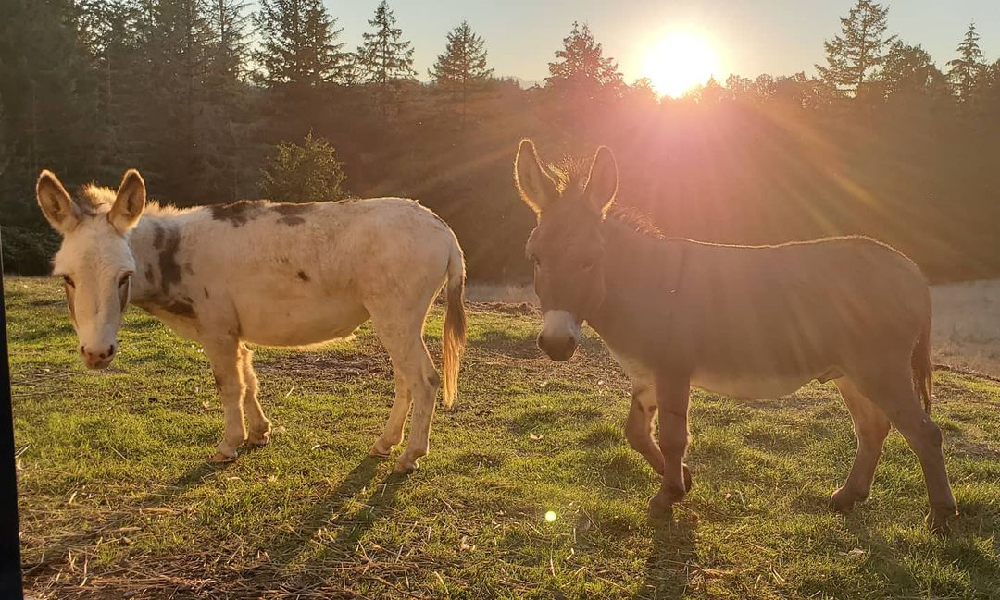

Life on the Farm
Author: Kristen Kraemer December 5, 2020
Ducks. The gateway drug into the homesteading world. It started with one duck...
“I would rather be on my farm than be emperor of the world.” — George Washington
Ducks. The gateway drug into the homesteading world. It started with one duck...
On our 5 acre farm we have 11 different breeds of ducks with a total of 25. They all have their own personalities. Some of our ducks range in age from 1 year to 7 years old.
Aspiring developer running a 5 acre farm with my wife and two sons